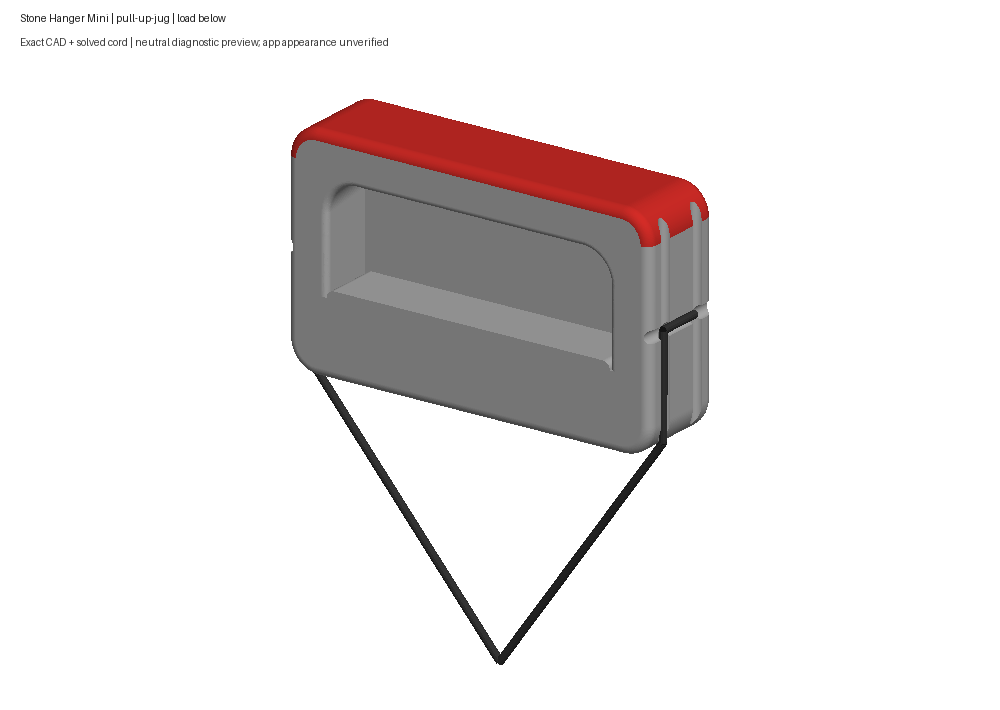
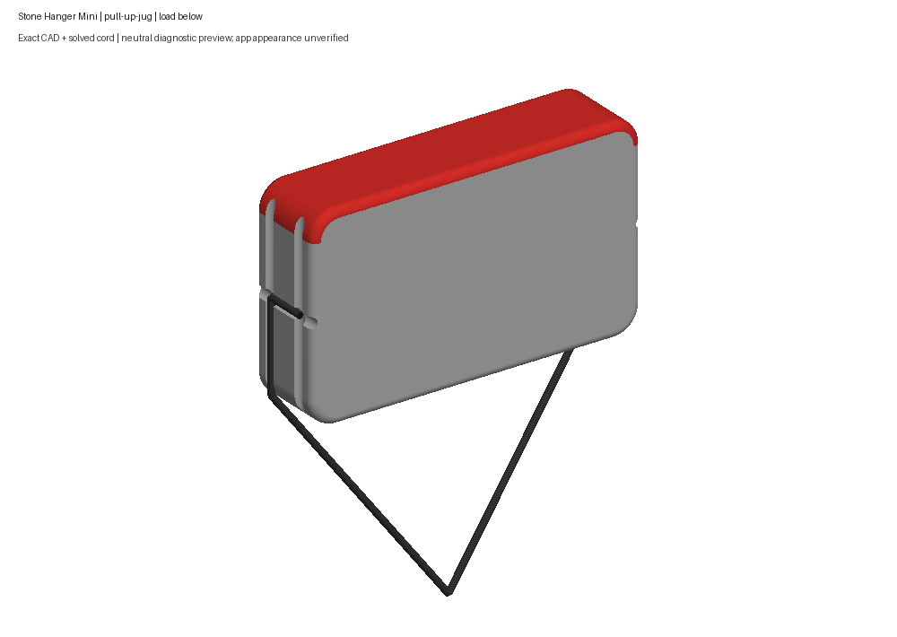
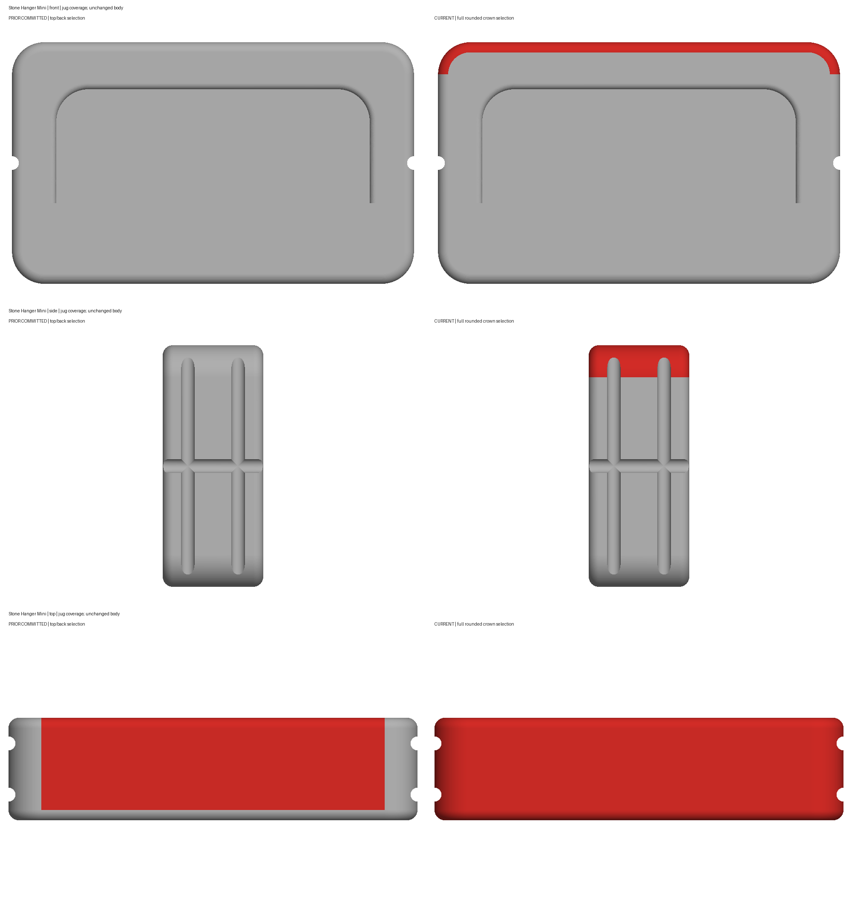
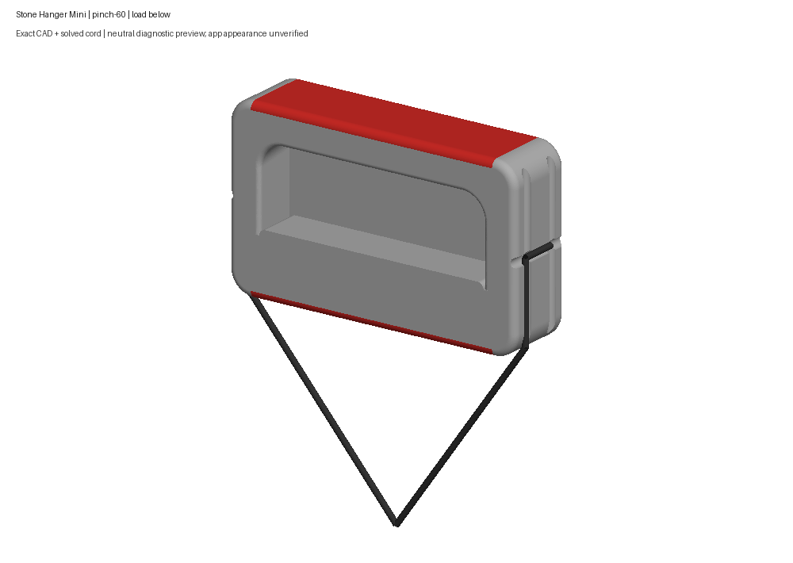

Jug highlight wraps around the existing upper crown and both rounded ends. Neutral exact CAD previews; current app appearance unverified. Human review pending.
Review notes · Fresh validation · Human clarification




Does the Mini’s wrapped jug highlight look right now?